Pr0j370 H011y M011y
Projeto produzido e completamente pensado por mim! Molly Vouller.
Olá residentes. Admiro a força de vontade de vocês para conseguirem encontrar essa página. E agradeço também, vai. Antes que perguntem, sim, é necessário esconder tão bem, não quero que isso caia em mãos erradas.
Enfim, o que eu quero dizer é que agora eu estarei totalmente do lado de vocês, passando informações valiosas sobre quem vocês conhecem. Mas, é de extrema importância que esse e os futuros documentos não vazem, caso aconteça, eu estou muito fud1d4! :D
Como se não bastasse os corvos, a família deu as caras de novo. Eles são bem misteriosos e reservados, é meio difícil de encontrar informações sobre, mas, irei fazer o possível para enviá-las para meus 4m4d0s r3s1d3nt3s!
Gregory Lafayette de vanily
Nasceu de Danariel e Viollet Lafayette de Vanilly. Aparentemente, antes de passar pela árvore, o garoto nasceu no meio de uma guerra fudida.
Sua mãe teve algumas complicações no parto ou erros médicos, resultando em alguns problemas respiratórios, por isso, Gregory usa uns aparelhos fodas para dar suporte a ele. Eu queria poder ver de perto… será que é 3n3rg1z4d0?
Enfim, pelo o que fiquei observando, esse menino é a criança mais feliz que conheci (tirando meu filho Oskar), seus pais o tratam muito bem e ele é muito carinhoso com eles também. Não sei se é com todo mundo, mas eu senti uma certa familiaridade olhando para o rosto dele…
Ele é um menino muito xereta, quase me encontrou espiando. Ele parece ser uma boa pessoa, gosta muito de sair correndo por aí com sua gata Félicette (pelo seu nome, deve ser bem feliz…) e sua cadela Laika, inclusive, ele parece conversar com elas como se elas o entendesse. Qu3 f0f0… 3 3str4nh0!
Por algum motivo, usa umas roupas religiosas, são bem bonitas e chiques, deve usar por ser muito caro ou bonito… Mas, sempre que vai sair para brincar, sua mãe bota um suéter até que bem fofo.
Além disso, descobri algumas coisas curiosas sobre ele, por exemplo: acredito que por ter os aparelhos, seus sinais vitais não seguem padrões humanos normais. Ou, por algum motivo, certas máquinas funcionam muito melhor quando ele está perto e ainda nomeia as máquinas, seria ele um ciborgue? b1z4rr0…
Em um dia, eu vi ele olhando para a floresta, parece que ele consegue escutar coisas ou frequências que outras pessoas não escutam, já que não vi nada vindo de lá.
Ele anda com um livrinho de vez em quando, eu tive a sorte de ver o que tem nele, aparentemente, ele desenha um monte de criaturas bizarras, quando mostrou para sua mãe, ele comentou que nunca tinha visto uma criatura parecida. QU3 P0RR4 P4SS4 N4 C4B3Ç4 D3SS3 M3N1N0!?
E, assim como seus pais, tem hiperfoco em alguma coisa. Desse moleke é foguetes e exploração espacial, ele vai se tornar um ciborgue astronauta?!
Enfim, foi isso que eu consegui descobrir após longos dias observando-os. Nos vemos em breve, residentes.
Confie em nós a sua informação.
AAAAAAAAAAAAAAAAAAAAAAAAAAAAAAAAAAAAAAAAAAAAAAAAAAAAAAAAAAAA